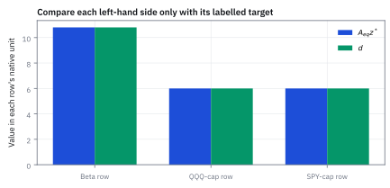
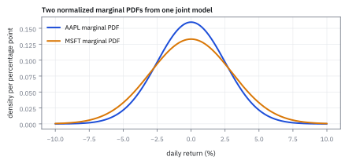

5.2 Marginal Distributions
ถ้าสนใจตัวแปรเดียว ให้รวมทุกกรณีของตัวแปรที่ไม่ได้ถาม ไม่ใช่เลือกกรณีใดกรณีหนึ่งของมัน
รายงานความเสี่ยงเช้านี้ถามบรรทัดเดียว: “AAPL มีโอกาสลง 2% ในหนึ่งวันเท่าไร” ข้อมูลที่ desk มีคือตารางโอกาสร่วม (สมมติ) ของผลตอบแทน AAPL กับทิศทางของ MSFT ช่อง “AAPL −2% และ MSFT ลง” มีโอกาส 0.15 ช่อง “AAPL −2% และ MSFT ขึ้น” มีโอกาส 0.05 และ MSFT ลงในวันทั่วไปด้วยโอกาส 0.40 นักวิเคราะห์คนหนึ่งตอบ 0.15 อีกคนตอบ $0.15/0.40=0.375$ ใครถูก
ลองตอบก่อนเปิดเฉลย
ไม่มีใครถูก คำตอบคือ $0.05+0.15=0.20$ คำถามไม่ได้พูดถึง MSFT เลย จึงต้องรวมทั้งวันที่ MSFT ขึ้นและวันที่ MSFT ลง คำตอบ 0.15 ทิ้งวันที่ MSFT ขึ้นไป ส่วน 0.375 ตอบอีกคำถามหนึ่ง คือ “ในวันที่ MSFT ลง AAPL ลง 2% บ่อยแค่ไหน” ซึ่งเป็นเรื่องของ conditional distribution หน้าถัดไป
ภาพรวมก่อนลงสูตร
joint distribution ตอบได้ทุกคำถามเกี่ยวกับสองตัวแปร แต่หลายคำถามสนใจตัวเดียว การดึงการแจกแจงของตัวเดียวออกมาเรียกว่า marginalization หลักคือรวมทุกค่าของตัวแปรที่ไม่ได้ถาม ชื่อ marginal มาจากผลรวมที่เขียนไว้ตามขอบ (margin) ของตาราง ไม่ได้แปลว่า “ส่วนเพิ่ม”
รูปด้านล่างวาดแต่ละค่าของ AAPL เป็นแท่งที่ต่อจากสองส่วน ส่วนน้ำเงินคือวันที่ MSFT ขึ้น ส่วนส้มคือวันที่ MSFT ลง ความยาวรวมของแท่งคือ marginal ของ AAPL สีภายในแท่งไม่มีผลต่อความยาวรวม นั่นคือความหมายของ “ไม่สนใจ MSFT”
หน้านี้ทำท่าเดียวกันสามแบบ: บวกช่องในตาราง ดันเกณฑ์ของ joint CDF ไปที่อนันต์ และอินทิเกรต density ตามอีกแกน แล้วจะเห็นว่าเมื่อ support ไม่ใช่สี่เหลี่ยม ขอบของอินทิกรัลคือจุดที่คนพลาด สุดท้ายจะเห็นว่า marginal ทิ้งข้อมูลอะไรไป
รูป — marginal คือความยาวรวมของแท่ง ไม่ว่าแต่ละส่วนเป็นสีอะไร
ศัพท์ที่ใช้ในหัวข้อนี้
- Marginal distribution
- การแจกแจงของตัวแปรหนึ่งตัว (หรือกลุ่มย่อย) ที่ได้จาก joint distribution โดยรวมทุกค่าของตัวแปรที่เหลือ ใช้รายงานความเสี่ยงรายสินทรัพย์ หาควอนไทล์ และตรวจแบบจำลองทีละตัว
- Marginalization (การรวมทิ้ง)
- การบวกตามแถวหรือคอลัมน์ในกรณีตาราง หรืออินทิเกรตตามแกนที่ไม่สนใจในกรณี density ใช้กำจัดตัวแปรที่ไม่อยู่ในคำถาม
- Joint marginal
- marginal ของกลุ่มตัวแปรมากกว่าหนึ่งตัว เช่น ดึงคู่ AAPL กับ MSFT ออกจากพอร์ต 50 หุ้น กลุ่มที่เก็บไว้ยังมีโครงสร้างร่วมภายในครบ
- Support
- บริเวณที่ density เป็นบวก กำหนดขอบของอินทิกรัล ถ้าขอบของตัวแปรหนึ่งขึ้นกับอีกตัว ช่วงอินทิเกรตก็เปลี่ยนตามจุดที่ตรึง
- Fréchet bounds
- ช่วงของโอกาสร่วมที่เป็นไปได้เมื่อรู้แค่ marginal ใช้แสดงว่า marginal อย่างเดียวบอกโอกาสเกิดพร้อมกันไม่ได้
สัญลักษณ์และหน่วย
| สัญลักษณ์ | ความหมาย | หน่วย |
|---|---|---|
| $p_{X,Y}(x,y)$ | โอกาสร่วมในตาราง | ไม่มีหน่วย |
| $p_X(x),\ p_Y(y)$ | marginal PMF ของแต่ละตัว | ไม่มีหน่วย |
| $f_{X,Y}(x,y)$ | joint density | ต่อ (หน่วย $X$ × หน่วย $Y$) |
| $f_X(x)$ | marginal density ของ $X$ | ต่อหน่วย $X$ |
| $F_X(x)$ | marginal CDF ของ $X$ | ไม่มีหน่วย |
ขั้นที่ 1 — บวกตามแถว: marginal จากตาราง
โจทย์ให้อะไรมาบ้าง: ตารางสมมติ $X$ คือผลตอบแทนรายวันของ AAPL หน่วยจุดเปอร์เซ็นต์ $Y$ คือทิศทางของ MSFT ตัวเลขในช่องคือโอกาสร่วม รวมทั้งตารางได้ 1
| $X$ | $Y=$ ขึ้น | $Y=$ ลง | $p_X(x)$ |
|---|---|---|---|
| −2 | 0.05 | 0.15 | 0.20 |
| 0 | 0.30 | 0.20 | 0.50 |
| 2 | 0.25 | 0.05 | 0.30 |
| $p_Y(y)$ | 0.60 | 0.40 | 1 |
คำตอบ: AAPL ลง 2% ด้วยโอกาส 0.20 สองกรณีของ MSFT ไม่ทับกันและครอบคลุมทุกวัน การบวกจึงนับแต่ละวันครั้งเดียวพอดี marginal ของ MSFT ได้จากการบวกตามคอลัมน์ ค่าเฉลี่ยผลตอบแทน AAPL คือ 0.20 จุดเปอร์เซ็นต์ต่อวัน คำนวณจาก marginal ได้เลยโดยไม่ต้องรู้ว่า MSFT ทำอะไร
ตรวจเองใน 10 วินาที: marginal แต่ละชุดรวมได้ 1 แยกกัน $0.20+0.50+0.30=1$ และ $0.60+0.40=1$ ไม่ต้องเอาสองชุดมาบวกกันเป็น 1 เพราะเป็นการแจกแจงของคนละตัวแปร
ขั้นที่ 2 — marginal จาก joint CDF: ปลดเงื่อนไขของอีกตัว
ถ้าแบบจำลองให้มาเป็น joint CDF แทนตาราง เราไม่ต้องบวกช่อง แค่ปล่อยให้เกณฑ์ของตัวที่ไม่สนใจไปถึงอนันต์ ท่านี้ใช้ได้กับการแจกแจงทุกชนิด และใช้กับกลุ่มตัวแปรได้ด้วย
เงื่อนไข $Y\le y$ ที่ $y$ ใหญ่มาก แทบไม่ตัดวันไหนทิ้ง เมื่อ $y\to\infty$ เงื่อนไขนี้หายไป เหลือแค่ $X\le x$ ลิมิตนี้ใช้ได้เพราะเหตุการณ์ $X\le x,\,Y\le y$ ขยายขึ้นเรื่อย ๆ จนเท่ากับ $X\le x$ และโอกาสของเหตุการณ์ที่ขยายขึ้นต่อเนื่องเข้าหาโอกาสของเหตุการณ์ปลายทาง ในตาราง 100 วันของ joint CDF คือ $F(-1,+\infty)=0.20$
บรรทัดสุดท้ายคือ joint marginal: จากเวกเตอร์ผลตอบแทน 50 หุ้น ถ้าใส่ $\infty$ ทุกตำแหน่งยกเว้นตำแหน่งที่ $i$ และ $j$ จะได้ joint CDF ของคู่นั้น ผลที่ได้ยังเก็บความสัมพันธ์ภายในคู่ไว้ครบ สิ่งที่หายไปคือความสัมพันธ์กับอีก 48 ตัว
ขั้นที่ 3 — กรณีต่อเนื่อง: อินทิเกรตอีกแกนทิ้ง
ในตาราง เราบวกตามแถว ในกรณี density การบวกกลายเป็นอินทิกรัล ขั้นนี้แสดงว่าทำไมสูตร “อินทิเกรตอีกแกน” จึงถูก ไม่ใช่กฎที่ต้องจำ
บรรทัดแรกคือท่าดันเกณฑ์ของอีกตัวไปที่อนันต์ บวกกับความสัมพันธ์ CDF–PDF ของ joint: มุมซ้ายล่างที่ขอบบนเป็นอนันต์คือแถบแนวตั้งทั้งแถบทางซ้ายของ $x$ วงเล็บเหลี่ยมคือ “ผลรวมตามแนวตั้ง” ที่ตำแหน่ง $u$
บรรทัดที่สองใช้ทฤษฎีบทหลักมูลของแคลคูลัส: อนุพันธ์ของอินทิกรัลตามขอบบน คือค่าของสิ่งที่อยู่ในอินทิกรัลที่ขอบบนนั้น อินทิกรัลชั้นนอกจึงหายไป เหลือวงเล็บเหลี่ยมที่ $u=x$ คือรอยตัดแนวตั้งของ density ที่ตำแหน่ง $x$ แล้วรวมตลอดแนว
หน่วยลงตัวเอง: joint density มีหน่วยต่อ (จุดเปอร์เซ็นต์)² อินทิเกรตตาม $v$ คูณหน่วยจุดเปอร์เซ็นต์เข้าไปหนึ่งครั้ง จึงเหลือต่อจุดเปอร์เซ็นต์ ซึ่งเป็นหน่วยของ density ตัวแปรเดียว และเพราะ joint รวมทั้งระนาบได้ 1 marginal ก็รวมได้ 1 โดยอัตโนมัติ
รูป — รอยตัดที่ AAPL = 0% และพื้นที่ใต้รอยตัด

รูป — marginal density ของสองหุ้นจากแบบจำลองเดียวกัน

ขั้นที่ 4 — support สามเหลี่ยม: ขอบอินทิกรัลเปลี่ยนตามจุดที่ตรึง
กับ Gaussian เราอินทิเกรตจาก $-\infty$ ถึง $\infty$ ได้ทุกครั้ง แต่หลายแบบจำลองมีข้อจำกัดระหว่างตัวแปร เช่นราคาต่ำสุดของวันไม่มีทางเกินราคาสูงสุดของวัน ขั้นนี้ใช้ตัวอย่างที่มีข้อจำกัดแบบนั้น
โจทย์ให้อะไรมาบ้าง: ตัวแปรไร้หน่วย $f_{X,Y}(x,y)=2$ เมื่อ $0\le y\le x\le1$ และเป็นศูนย์ที่อื่น support คือสามเหลี่ยมมุม $(0,0),\ (1,0),\ (1,1)$ พื้นที่ $\tfrac12$ มวลรวมจึงเป็น $2\times\tfrac12=1$
คำตอบ: ตรึง $x$ แล้วลากแนวตั้ง $y$ วิ่งได้จาก 0 ถึง $x$ เท่านั้น เพราะเหนือนั้นออกนอกสามเหลี่ยม ตรึง $y$ แล้วลากแนวนอน $x$ วิ่งจาก $y$ ถึง 1 ความสูง density เท่ากันทุกจุด แต่ความยาวของรอยตัดไม่เท่ากัน marginal จึงไม่เป็นค่าคงที่ นอกช่วง 0 ถึง 1 marginal ทั้งสองเป็นศูนย์
ตรวจเองใน 10 วินาที: ถ้าอินทิเกรต 2 จาก 0 ถึง 1 ทุกครั้งโดยไม่ดู support จะได้ marginal เป็น 2 ตลอดช่วงและมวลรวม 2 ซึ่งเป็นไปไม่ได้ ตัวเลขที่เกิน 1 ตรงนี้คือสัญญาณว่าขอบอินทิกรัลผิด
รูป — รอยตัดของสามเหลี่ยมยาวไม่เท่ากัน
ขั้นที่ 5 — CDF และค่าเฉลี่ยจาก marginal
เมื่อได้ marginal แล้ว ทุกเครื่องมือของตัวแปรเดียวใช้ได้ทันที ขั้นนี้หา CDF ค่าเฉลี่ย และดูว่า density ที่สูงเกิน 1 ไม่ได้ทำให้อะไรผิด
โจทย์ให้อะไรมาบ้าง: $f_X(x)=2x$ และ $f_Y(y)=2(1-y)$ บนช่วง 0 ถึง 1 จากรอยตัดของสามเหลี่ยมด้านบน
คำตอบ: $X$ มักอยู่สูง ($E[X]=2/3$) และ $Y$ มักอยู่ต่ำ ($E[Y]=1/3$) สอดคล้องกับข้อจำกัด $Y\le X$ ที่ $0.3$ density ของ $Y$ สูง 1.4 ซึ่งเกิน 1 แต่โอกาสสะสม $P(Y\le0.3)=0.6-0.09=0.51$ ยังไม่เกิน 1 ความสูงกับโอกาสเป็นคนละเรื่องกัน
ตรวจเองใน 10 วินาที: $E[X]+E[Y]=1$ ในแบบจำลองนี้ เพราะสามเหลี่ยมเกิดจากการพับสี่เหลี่ยมที่มีค่าเฉลี่ยของแต่ละแกน $\tfrac12$ (ดูการพับสี่เหลี่ยมด้านล่าง) แต่นั่นไม่ได้แปลว่า $X+Y=1$ ทุกครั้ง
รูป — marginal density สองเส้น และพื้นที่ถึง 0.3
ขั้นที่ 6 — ที่มาของสามเหลี่ยม: พับสี่เหลี่ยมตามเส้นทแยง
density 2 บนสามเหลี่ยมดูเหมือนถูกตั้งขึ้นลอย ๆ ขั้นนี้แสดงว่ามันเกิดจากกลไกง่าย ๆ และใช้กลไกนั้นตรวจ marginal ที่ได้อีกทาง
โจทย์ให้อะไรมาบ้าง: สุ่ม $U,V$ สองตัวแบบ uniform บนช่วง 0 ถึง 1 อย่างอิสระ แล้วตั้ง $X=\max(U,V)$ และ $Y=\min(U,V)$ เช่นราคาสูงสุดและต่ำสุดของสองช่วงเวลา (ในหน่วยที่ปรับให้อยู่ในช่วง 0 ถึง 1)
คำตอบ: ได้ $F_X=x^2$ และ $F_Y=2y-y^2$ ตรงกับ CDF ที่ได้จาก marginal density ด้านบนทุกตัว บรรทัดแรกใช้ว่าค่ามากสุดไม่เกิน $x$ ก็ต่อเมื่อทั้งสองตัวไม่เกิน $x$ และการคูณ $x\cdot x$ ใช้ได้เพราะ $U,V$ สุ่มอย่างอิสระ (ทำไมจึงคูณได้อยู่ใน independence) บรรทัดที่สองคิดฝั่งตรงข้าม: ค่าน้อยสุดเกิน $y$ ก็ต่อเมื่อทั้งสองตัวเกิน $y$
ตรวจเองใน 10 วินาที: ค่าเฉลี่ยของ max บวก min เท่ากับค่าเฉลี่ยของ $U+V$ คือ $\tfrac12+\tfrac12=1$ จึงได้ $E[X]+E[Y]=1$ ตามที่สังเกตไว้ตอนหาค่าเฉลี่ยจาก marginal
รูป — สองจุดในสี่เหลี่ยมพับมาเป็นจุดเดียวในสามเหลี่ยม
ขั้นที่ 7 — marginal บอกโอกาสเกิดพร้อมกันไม่ได้
marginal สะดวกมาก แต่มันทิ้งอะไรไป ขั้นนี้ใช้ตาราง 100 วันจาก joint CDF ซึ่งมี marginal ของ AAPL และ MSFT เป็น 0.20 ทั้งคู่ แล้วถามว่าถ้ารู้แค่ marginal โอกาสลงพร้อมกันอาจเป็นเท่าไรได้บ้าง
โจทย์ให้อะไรมาบ้าง: $P(X\le-1)=p=0.20$ และ $P(Y\le-1)=q=0.20$ ให้ $j$ แทนโอกาสที่ลงพร้อมกัน
คำตอบ: โอกาสลงพร้อมกันเป็นอะไรก็ได้ตั้งแต่ 0 ถึง 0.20 บรรทัดแรก: วันที่ลงทั้งคู่เป็นส่วนหนึ่งของวันที่ AAPL ลง จึงมากกว่า 0.20 ไม่ได้ บรรทัดที่สอง: โอกาสที่อย่างน้อยหนึ่งตัวลงคือ $p+q-j$ ตามที่เห็นใน joint CDF และโอกาสนี้เกิน 1 ไม่ได้ ที่ 0 คือหุ้นสองตัวไม่เคยลงวันเดียวกัน ที่ 0.04 คือกรณีอิสระ ที่ 0.10 คือข้อมูลจริงในตาราง และที่ 0.20 คือลงพร้อมกันทุกครั้ง ทั้งสี่แบบมี marginal เหมือนกันเป๊ะ ช่วงนี้มีชื่อว่า Fréchet bounds
ตรวจเองใน 10 วินาที: เติมตาราง 2×2 ที่ $j=0.20$: ช่องลงทั้งคู่ 20 วัน ช่อง AAPL ลงตัวเดียว 0 วัน MSFT ลงตัวเดียว 0 วัน ไม่ลงเลย 80 วัน ขอบตารางยังเป็น 20 กับ 80 ทุกด้าน
รูป — marginal เดียวกัน แต่โอกาสลงพร้อมกันอยู่ได้ทั้งช่วง
ความผิดที่ให้คำตอบผิดแบบเงียบ ๆ
อ่านคอลัมน์เดียวเป็น marginal: คอลัมน์ MSFT ลงคือ 0.15, 0.20, 0.05 รวมกันได้แค่ 0.40 ไม่ใช่การแจกแจงของ AAPL ใช้ 0.15 แทน 0.20 ทำให้โอกาส AAPL ลง 2% ต่ำไป 25%
อินทิเกรตเต็มช่วงโดยไม่ดู support: ในสามเหลี่ยม ถ้าใช้ $\int_0^1 2\,dy$ ทุกครั้งจะได้ $f_X=2$ และมวลรวม 2 ผิดไปเท่าตัว วาด support ก่อนตั้งขอบทุกครั้ง
เข้าใจว่ารอยตัดคือการแจกแจงของอีกตัว: รอยตัด Gaussian ที่ AAPL = 0% มีพื้นที่ 0.1596 ไม่ใช่ 1 ถ้าใช้มันเป็น density ของ MSFT โอกาสทุกตัวจะเล็กไป 6.3 เท่า ($1/0.1596$) การแจกแจงของ MSFT เมื่อรู้ AAPL ต้องหารด้วยพื้นที่นี้ก่อน
คิดว่า marginal พอสำหรับความเสี่ยงพอร์ต: marginal 0.20 กับ 0.20 อนุญาตให้โอกาสลงพร้อมกันเป็นอะไรก็ได้ตั้งแต่ 0 ถึง 0.20 การบวก VaR รายตัวแล้วเรียกว่า VaR ของพอร์ตก็ผิดในทำนองเดียวกัน ผลรวมอาจสูงหรือต่ำกว่าค่าจริงขึ้นกับการแจกแจงร่วม
ใช้ทำอะไรบนโต๊ะจริง
รายงานความเสี่ยงรายสินทรัพย์ เช่นโอกาสขาดทุนเกินเกณฑ์ของหุ้นแต่ละตัว หรือควอนไทล์ 1% ของผลตอบแทนรายตัว ใช้ marginal ทั้งหมด การตรวจแบบจำลองหลายตัวแปรก็เริ่มที่ marginal: ถ้าแบบจำลองให้ marginal ของแต่ละหุ้นไม่ตรงกับข้อมูล ส่วนร่วมก็ไม่น่าเชื่อ แนวคิด copula ใน Gaussian copula ใช้ประโยชน์จากการแยกนี้โดยตรง: ประมาณ marginal ของแต่ละตัวจากข้อมูลของมันเอง แล้วกำหนดรูปแบบการเกิดร่วมแยกต่างหาก ซึ่งเป็นส่วนที่ marginal บอกไม่ได้ ตามที่ Fréchet bounds แสดง
โจทย์ตรวจความเข้าใจ
1. จากตาราง AAPL–MSFT จงหา $P(X\le0)$ และ marginal ของ MSFT แล้วตอบว่าการรู้ marginal ทั้งสองชุดพอจะหาโอกาส “AAPL −2% และ MSFT ลง” ได้หรือไม่
เฉลย
$P(X\le0)=0.20+0.50=0.70$ marginal ของ MSFT คือขึ้น 0.60 ลง 0.40 จาก marginal อย่างเดียวหาโอกาสร่วมไม่ได้ ช่วงที่เป็นไปได้คือ $\max(0,\,0.20+0.40-1)=0$ ถึง $\min(0.20,0.40)=0.20$ ค่าจริงในตาราง 0.15 อยู่ในช่วงนี้ ส่วนค่าที่ได้ถ้าอิสระคือ 0.08
2. ในตัวอย่างสามเหลี่ยม จงหา $P(X\gt0.5)$ และ $P(Y\le0.5)$
เฉลย
$P(X\gt0.5)=1-F_X(0.5)=1-0.25=0.75$ และ $P(Y\le0.5)=2(0.5)-0.5^2=0.75$ ได้ค่าเท่ากันแต่เป็นคนละเหตุการณ์ ตรวจด้วยกลไกพับ: max เกิน 0.5 เมื่อมีอย่างน้อยตัวหนึ่งเกิน 0.5 โอกาส $1-0.5^2=0.75$ ส่วน min ไม่เกิน 0.5 ก็เมื่อมีอย่างน้อยตัวหนึ่งไม่เกิน 0.5 โอกาสเท่ากัน
3. ลูกหนี้สองรายมีโอกาสผิดนัดในหนึ่งปี 0.7 และ 0.6 (พอร์ตสินเชื่อคุณภาพต่ำมาก สมมติ) โอกาสที่ผิดนัดทั้งคู่อาจเป็นเท่าไรได้บ้าง ถ้ารู้แค่ marginal
เฉลย
ขอบล่าง $\max(0,\,0.7+0.6-1)=0.3$ ขอบบน $\min(0.7,0.6)=0.6$ ช่วงนี้ไม่เริ่มที่ศูนย์ เพราะโอกาสรวมเกิน 1 ทำให้สองเหตุการณ์ต้องทับกันอย่างน้อย 0.3 ถ้าอิสระจะได้ $0.42$ ซึ่งอยู่ในช่วง
คำนวณซ้ำด้วย JavaScript
เปิดดูโค้ด
// 1) table: rows X = -2, 0, 2 ; columns MSFT up, down
const joint = [[.05, .15], [.30, .20], [.25, .05]];
const xs = [-2, 0, 2];
const pX = joint.map(row => row[0] + row[1]); // [0.2, 0.5, 0.3]
const pY = [0, 1].map(j => joint.reduce((s, row) => s + row[j], 0)); // [0.6, 0.4]
const meanX = pX.reduce((s, p, i) => s + p * xs[i], 0); // 0.2
console.log({ pX, pY, meanX });
// 2) triangle f = 2 on 0 <= y <= x <= 1: marginals by midpoint integration
const integrate = (g, a, b, n = 10000) => {
let s = 0; const h = (b - a) / n;
for (let i = 0; i < n; i++) s += g(a + (i + .5) * h) * h;
return s;
};
const fX = x => (x < 0 || x > 1) ? 0 : integrate(() => 2, 0, x); // 2x
const fY = y => (y < 0 || y > 1) ? 0 : integrate(() => 2, y, 1); // 2(1-y)
console.log({ fX06: fX(.6), fY03: fY(.3),
cdfX03: integrate(x => 2 * x, 0, .3), cdfY03: integrate(y => 2 * (1 - y), 0, .3),
EX: integrate(x => 2 * x * x, 0, 1), EY: integrate(y => 2 * y * (1 - y), 0, 1) });
// 3) fold check: X = max(U,V), Y = min(U,V) on a fine grid of (U,V)
let below = 0, minBelow = 0; const m = 400;
for (let i = 0; i < m; i++) for (let j = 0; j < m; j++) {
const u = (i + .5) / m, v = (j + .5) / m;
if (Math.max(u, v) <= .3) below++;
if (Math.min(u, v) <= .3) minBelow++;
}
console.log({ PmaxLE03: below / m / m, PminLE03: minBelow / m / m }); // 0.09, 0.51
// 4) Frechet bounds for marginals p and q
const frechet = (p, q) => [Math.max(0, p + q - 1), Math.min(p, q)];
console.log(frechet(.2, .2), frechet(.2, .4), frechet(.7, .6));
// [0, 0.2] [0, 0.2] [0.3, 0.6]สิ่งที่ควรตอบได้หลังอ่าน
- “ไม่สนใจอีกตัว” แปลว่ารวมทุกค่าของมัน: AAPL ลง 2% คือ $0.05+0.15=0.20$ ไม่ใช่ 0.15 และไม่ใช่ 0.375
- จาก joint CDF ได้ marginal ด้วยการดันเกณฑ์ของอีกตัวไปที่อนันต์ และใช้ท่าเดียวกันดึงกลุ่มย่อยออกจากเวกเตอร์ได้
- จาก density ได้ marginal ด้วยการอินทิเกรตตามแกนที่ไม่สนใจ โดยขอบอินทิกรัลมาจาก support เช่น $2x$ และ $2(1-y)$ บนสามเหลี่ยม
- marginal density สูงเกิน 1 ได้ ($f_Y(0.3)=1.4$) แต่พื้นที่รวมต้องเป็น 1 เสมอ
- marginal ไม่กำหนดโอกาสเกิดพร้อมกัน: marginal 0.20 กับ 0.20 อนุญาตให้โอกาสร่วมอยู่ที่ใดก็ได้ตั้งแต่ 0 ถึง 0.20
marginal รวมทุกกรณีของอีกตัว หน้าถัดไป conditional distribution ทำตรงข้าม: เลือกเฉพาะกรณีที่รู้แล้ว เช่นวันที่ MSFT ลง แล้วปรับสเกลให้รวมได้ 1 อีกครั้ง ซึ่งคือที่มาของคำตอบ 0.375 ในโจทย์ต้นหน้า